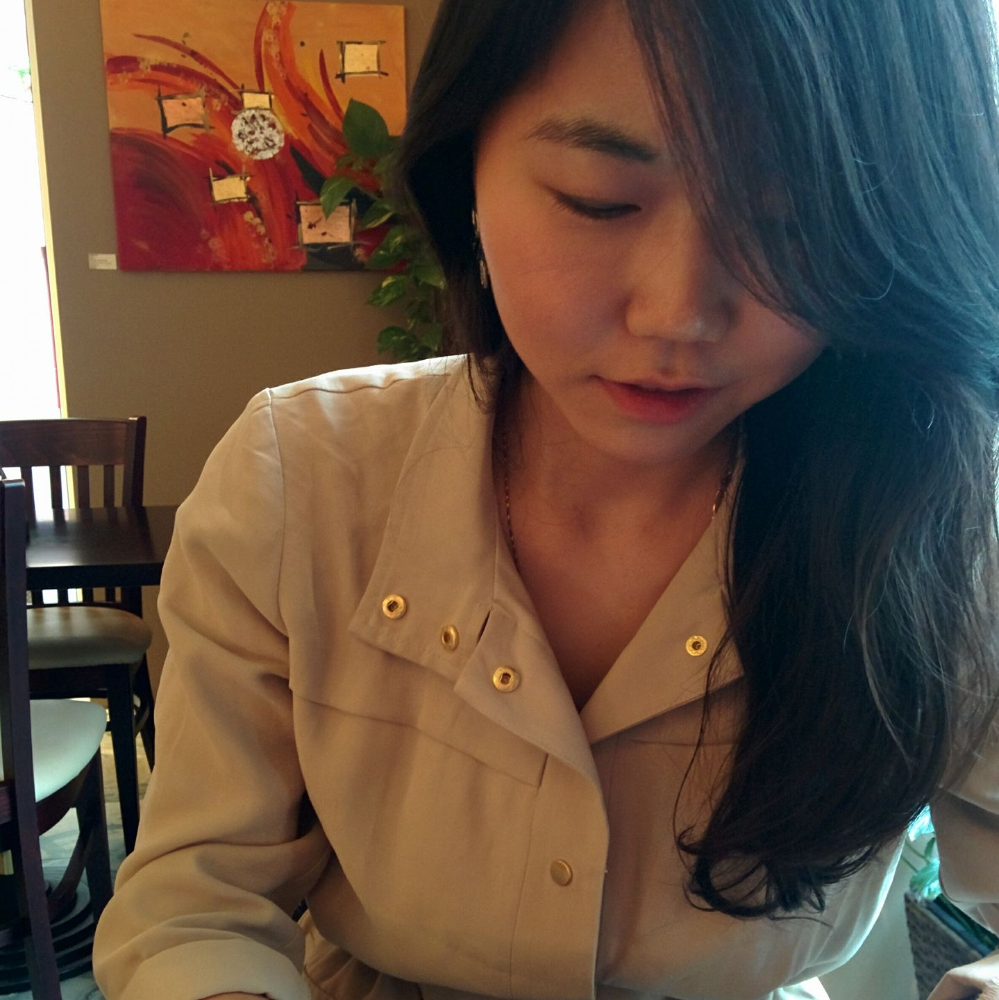

01
Model Compression
Quantization, sparsity, and low-rank decomposition for reducing model redundancy in MLLM inference.
ECCV 2026 Tutorial | Sep 8 AM
A systematic tutorial on efficient MLLM inference.
Multimodal large language models have advanced rapidly, but their inference cost remains a major barrier for cloud serving and edge deployment. The cost comes from massive model parameters, long multimodal contexts, attention complexity, and memory-bound execution on modern hardware. This tutorial frames efficient MLLM inference through two complementary lenses: approximated computing, which reduces model and data redundancy while preserving practical utility, and exact computing, which accelerates inference through system and hardware optimization without changing model outputs.
Organizers
Westlake University
UC Merced
NVIDIA

NVIDIA
University of Wisconsin-Madison
Thinking Machines Lab
Meta FAIR
Microsoft AI
University of Central Florida

Westlake University
Westlake University
Technical Program
Quantization, sparsity, and low-rank decomposition for reducing model redundancy in MLLM inference.
Training & training-frree compression methods for long multimodal inputs and autoregressive generation.
Exact computing methods and inference framework that improve inference throughput and latency without changing the computed result.
Welcome, tutorial framing, and logistics.
Huan WangInformal discussion with organizers and speakers.
Summary, Q&A.
Huan WangMaterials
Speaker slides will be posted after the final program is confirmed.
Recommended papers, code links, and reproducible resources.
Curated survey and recent work on efficient MLLM inference.
Affiliations